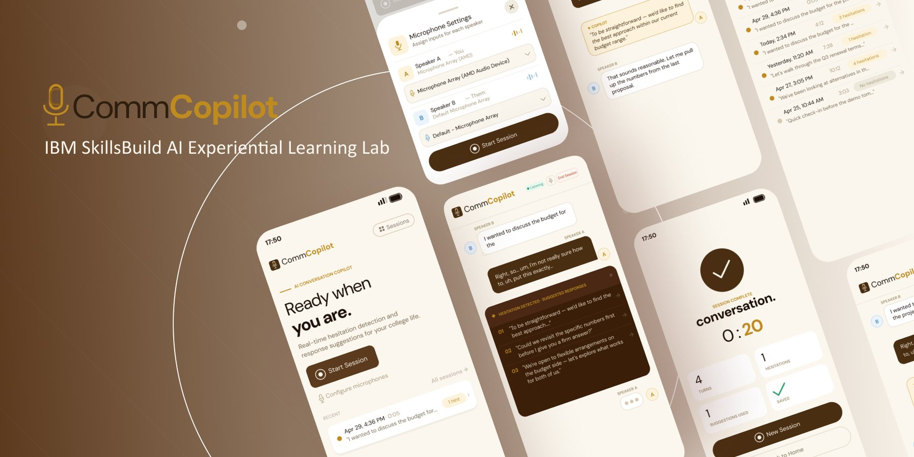
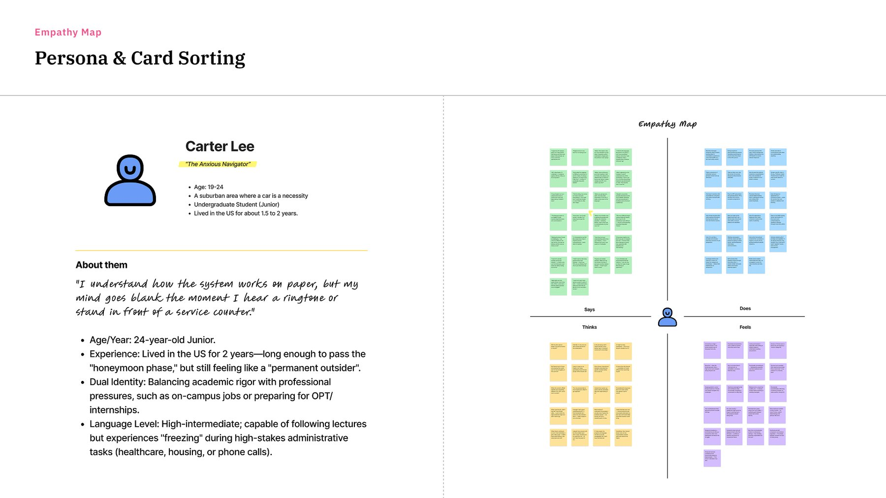
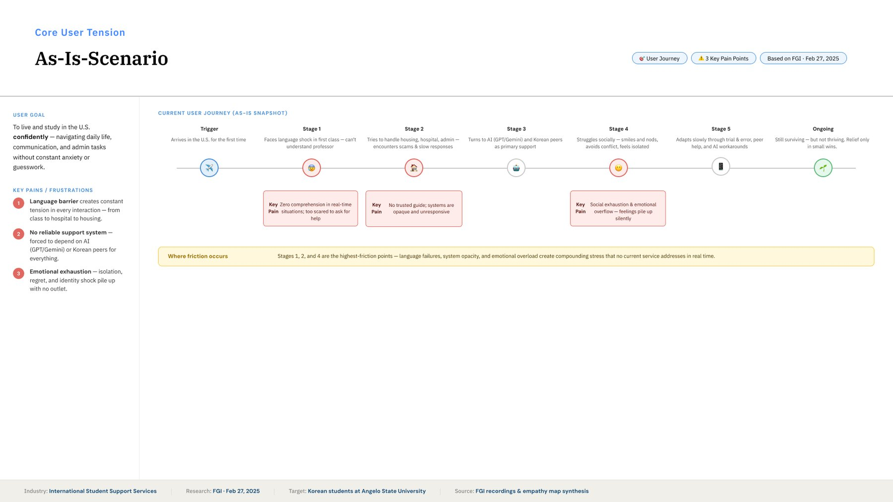
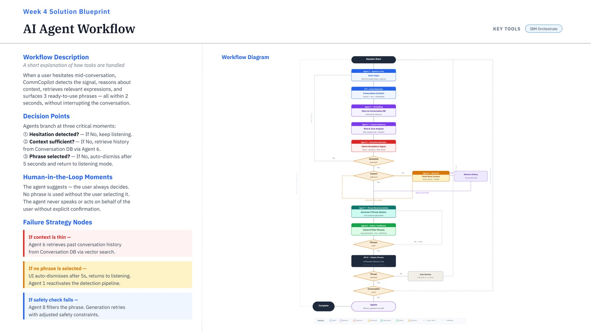
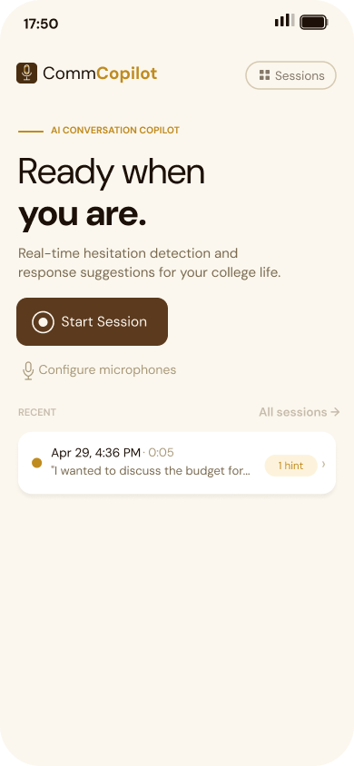
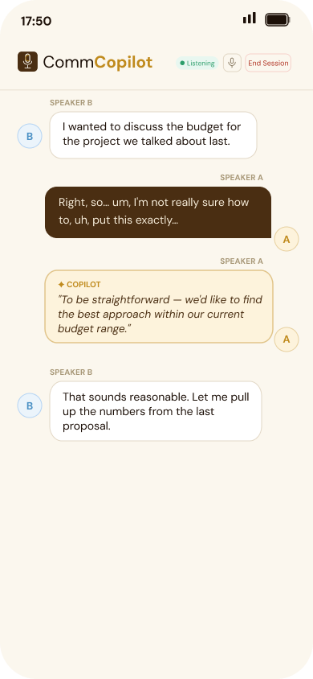
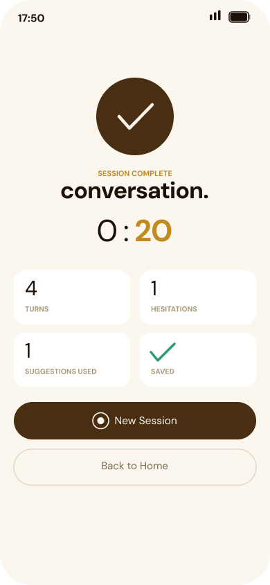

03 · Product & UX
Designing an AI conversation copilot based on user research with international students.

Overview
CommCopilot is an AI-powered conversation assistant designed for international students navigating academic and everyday communication in English. I led the research, product strategy, and Figma design for this project — grounding every design decision in direct user interviews.
The Opportunity
International students often struggle not with language fluency itself, but with the nuance of tone, formality, and cultural context in academic and social communication. Existing AI tools treat all users the same. The opportunity was to design something that adapts to the specific needs of this user group.
Strategy & Approach
Selected Work


Interview synthesis and persona boards from the research phase. Click to view larger.

Mapped flow across onboarding, core tool, and settings. Click to view larger.



Figma prototype screens: onboarding, core tool, and settings.
Takeaway
This project showed me that the best AI products aren't the ones with the most features — they're the ones that deeply understand a specific user's real friction. The research phase was the most valuable part: every design decision became easier once I knew exactly who I was designing for and what they actually needed.